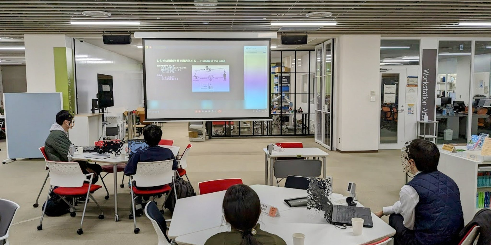

Links
 X
X Github
Github
コンピュータクラブでは、活動を主に班ごとで行い、その成果を新入生歓迎会や技科大祭、コミックマーケットなどで発表しています。 また、定期的にLT会(ライトニングトーク会)を開催し、部員間での技術情報の共有も行っています。
UnityによるVRゲーム制作
Raspberry Piを用いたIoT開発・サーバの管理
Webアプリの開発・サークルページの管理
毎週金曜日部会を開いています。主にA2棟の講義室を使いますが、場所はそのつど変更になります。4月中は公式Xで場所を広報しますので、ぜひご確認ください。
年度途中での入部も随時受け付けています。見学の際はcclub.tut@gmail.comまたはXのDMへご連絡ください。
部会の活動ごとに活動日記を更新しています。
部室の様子が360度見れます。